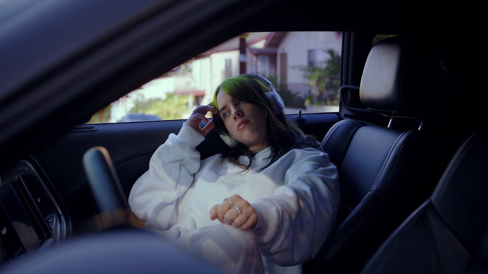

Billie Eilish Pirate Baird O’Connell es una cantante, compositora y productora nacida el 18 de diciembre de 2001 en Los Ángeles, California. Desde una edad muy temprana, demostró una sensibilidad artística poco común. Criada en una familia de artistas, fue educada en casa y tuvo libertad para explorar la música, el teatro y la escritura.
Billie comenzó a componer junto a su hermano Finneas O’Connell, quien ha sido su colaborador musical más cercano. Juntos produjeron en su habitación su primer éxito viral: “Ocean Eyes”. Lo que comenzó como una publicación en SoundCloud, se convirtió en el inicio de una revolución musical.
Lo que distingue a Billie no es solo su voz suave y única, sino la manera en la que expresa emociones complejas y temas profundos como la ansiedad, la depresión, el amor no correspondido, la fama, la inseguridad corporal y la muerte. Su estilo musical combina el pop alternativo, el dark pop, el electropop e incluso el indie con una estética minimalista y oscura.
Desde su primer EP “Don’t Smile at Me” hasta álbumes como “When We All Fall Asleep, Where Do We Go?” y “Happier Than Ever”, Billie ha roto récords en ventas y premios, incluyendo varios Grammy, un Oscar y reconocimientos de la industria musical y social.
Más allá de la música, Billie es un ícono cultural. Se ha convertido en un símbolo de autenticidad y libertad personal. Ha alzado la voz sobre temas como el cambio climático, la salud mental, el feminismo y el respeto al cuerpo. Con su estilo visual rebelde y sincero, Billie ha inspirado a millones de jóvenes a aceptarse como son.
A pesar de su juventud, Billie ha mostrado una madurez y una visión que impactan. Su presencia en redes, entrevistas y escenarios muestra a una artista consciente, empática y conectada emocionalmente con su audiencia.
En resumen, Billie Eilish es mucho más que una cantante: es una fuerza generacional que representa el cambio, la vulnerabilidad y la autenticidad. Ha demostrado que ser diferente es una virtud y que la música puede ser un refugio y una revolución al mismo tiempo.